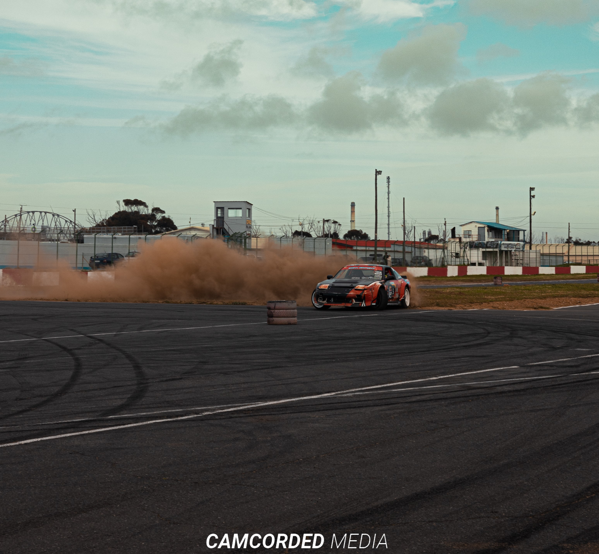

Camcorded Media
The world of Aumotive vehiclesJapanese Car Culture Japanese car culture is very popular among the world of automotive enthusiast, it is the way people dress and modify their cars with certain concepts and themes which was born and first found in Japan. Japanese Domestic Market or JDM is a global language of saying Japanese car culture, it is famous since the birth of many legendary automotive brands. Japanese cars are well known around the automotive world for their performance and well balanced all-around vehicle specifications, completing the essences of being an impressive car which can cover up all of the important vehicle elements such as fuel consumption, power to weight ratio, safety precautions, which determines the quality of each cars. The main theme of JDM is bagged or stance cars, stance cars are usually "lowered" or "chambered", meaning the car position and wheel position are not authentic or it is modified. A "lowered" car is a car that has lower suspension or in other words, the car body is closer to the ground. The big question is, "what is so special about having a JDM car?". Basically it all depends on one's prospective, because each and every individual have different point of views about the Japanese modified cars.
Nissan 200SX
The Nissan 180SX is a fastback automobile that Nissan Motors produced between 1988 and 1998. It is based on the S13 chassis from the Nissan S platform with the variants receiving an R designation (ex. PS13 and RPS13). It was sold exclusively in Japan paired with the CA18 motor in the early models; later models paired with the SR20 motor. Outside of Japan, it was re-badged as the 200SX[1] and in the US market as the Nissan 240SX, paired with the single overhead cam KA24E motor and later with the dual-overhead model KA24DE.